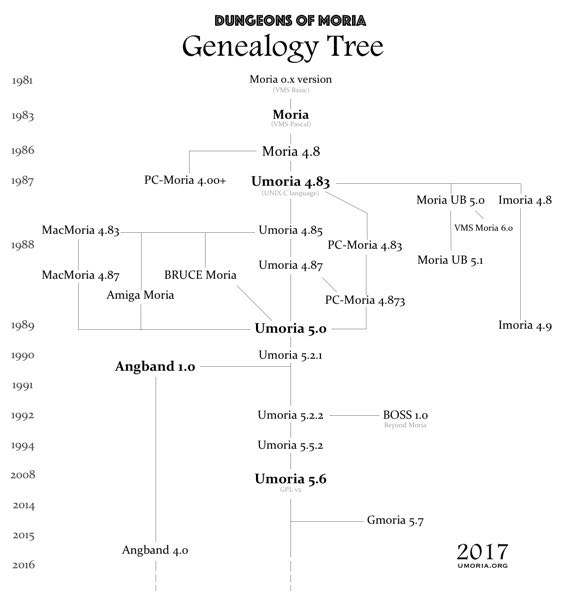

A Brief History of Moria / Umoria
Towards the end of 1981, while at the University of Oklahoma in the U.S., Robert Alan Koeneke started developing the first version of his new Rogue inspired game Moria using the VMS BASIC programming language, and releasing under the title Moria BETA 1.0
However, after a while he became discouraged with his plain Rogue clone and didn't touch the game again for more than a year. In 1983 he heard about a programming language called VMS Pascal, for the VAX 11/780 systems which was popular in Universities at the time. He decided his game would benefit from Pascal's better string handling so during the summer of 1983 he rewrote the game, releasing Moria 1.0.
In 1983/84 Koeneke partnered with his good friend Jimmey Wayne Todd Jr., who wrote the character generation and the save/load code, along with various other features and functions.
Koeneke worked on the game until the Spring of 1986, when he made his final release, Moria 4.5. Koeneke open sourced his game (one of the earliest known open source games) and maintenance was taken over by the students of University of Oklahoma, who released several more minor versions, with the last release being Moria 4.8 in November 1986.
It is this version of Moria that most early ports were based on, including Umoria, the C language port.
NOTE
Information on the early days of Moria is sparse, and what we do have can be somewhat contradictory.
Along with the code itself, there are two main sources of information: the book Dungeon Hacks by David L. Craddock, in which he interviews Koeneke, and an email to the rec.games.roguelike.* mailing list on February 21, 1996 from Koeneke (included below).
What is the last version of Moria that Koeneke worked on?
Dungeon H@acks says that Koeneke stopped working on Moria with the release of 4.5 in the Spring of 1986, and that the students of University of Oklahoma took over maintenance. However, in the 4.8 source code there is the comment, Fixed "SLOW" bug; 06-11-86 RAK, in the moria.inc file - RAK being the initials of Robert Alan Koeneke.
Umoria 4.81 - 4.87
In February 1987, James E. Wilson took the original Moria 4.8 sources and started porting it to the C language running on the UNIX operating system. Play testing started in early April 1987, and the first official release (4.85) was posted to the comp.sources.games mailing list on November 5, 1987.
Along with making the game available on many more systems, Umoria also fixed numerous bugs, spelling errors and inconsistencies in the original Moria sources. In later versions of the game character re-rolling was introduced, and there was no interactive help, but otherwise it had few changes from the original game.
As C is a much more portable language than the original Pascal, it became easier for Umoria to be ported to various other computer systems such as the IBM-PC, Atari ST, Amiga, Macintosh, Apple IIGS, VM/SP, Archimedes, as well a many different *nix systems.
Umoria 5.x
This version had a unified source for the UNIX/IBM-PC/Atari/Mac/VMS/Amiga ports and was released in early 1989. It included lots of new features, many of which were borrowed from BRUCE Moria -- developed in 1988 by Christopher J. Stuart at the Monash University, Melbourne, Australia (Clayton campus) -- along with many more bug fixes. All floating point code was eliminated, many play balance improvements were added, and various type/structure changes were introduced to reduce game size and allow fixes for pervasive bugs.
This version was sometimes called Moria 5.x, but it should not be confused with Moria UB 5.0 (1987).
Umoria 5.6
David Grabiner took over development for Umoria 5.4, but had made only minor changes. Umoria 5.6 was released under the GNU General Public License (GPL-3.0) in October 2008.
Moria Genealogy Illustration
Vertical position indicates roughly when the versions were made available, although the scale is not accurate.
The following two emails are from Koeneke and Wilson about their work on Moria and Umoria. Some minor formatting changes have been made.
Early History of Moria
The following email was posted by Robert A. Koeneke to the rec.games.roguelike.angband mailing list on 21. February 1996.
I had some email show up asking about the origin of Moria, and its relation to Rogue. So I thought I would just post some text on the early days of Moria.
First of all, yes, I really am the Robert Koeneke who wrote the first Moria. I had a lot of mail accusing me of pulling their leg and such. I just recently connected to Internet (yes, I work for a company in the dark ages where Internet is concerned) and was real surprised to find Moria in the news groups... Angband was an even bigger surprise, since I have never seen it. I probably spoke to its originator though... I have given permission to lots of people through the years to enhance, modify, or whatever as long as they freely distributed the results. I have always been a proponent of sharing games, not selling them.
Anyway...
Around 1980 or 81 I was enrolled in engineering courses at the University of Oklahoma. The engineering lab ran on a PDP 1170 under an early version of UNIX. I was always good at computers, so it was natural for me to get to know the system administrators. They invited me one night to stay and play some games, an early startrek game, The Colossal Cave Adventure (later just Adventure), and late one night, a new dungeon game called Rogue.
So yes, I was exposed to Rogue before Moria was even a gleam in my eye. In fact, Rogue was directly responsible for millions of hours of play time wasted on Moria and its descendants...
Soon after playing Rogue (and man, was I HOOKED), I got a job in a different department as a student assistant in computers. I worked on one of the early VAX 11/780's running VMS, and no games were available for it at that time. The engineering lab got a real geek of an administrator who thought the only purpose of a computer was WORK! Imagine... Soooo, no more games, and no more rogue!
This was intolerable! So I decided to write my own rogue game, Moria Beta 1.0. I had three languages available on my VMS system. Fortran IV, PASCAL V1.?, and BASIC. Since most of the game was string manipulation, I wrote the first attempt at Moria in VMS BASIC, and it looked a LOT like Rogue, at least what I could remember of it. Then I began getting ideas of how to improve it, how it should work differently, and I pretty much didn't touch it for about a year.
Around 1983, two things happened that caused Moria to be born in its recognizable form. I was engaged to be married, and the only cure for THAT is to work so hard you can't think about it; and I was enrolled for fall to take an operating systems class in PASCAL.
So, I investigated the new version of VMS PASCAL and found out it had a new feature. Variable length strings! Wow...
That summer I finished Moria 1.0 in VMS PASCAL. I learned more about data structures, optimization, and just plain programming that summer then in all of my years in school. I soon drew a crowd of devoted Moria players... All at OU.
I asked Jimmey Todd, a good friend of mine, to write a better character generator for the game, and so the skills and history were born. Jimmey helped out on many of the functions in the game as well. This would have been about Moria 2.0
In the following two years, I listened a lot to my players and kept making enhancements to the game to fix problems, to challenge them, and to keep them going. If anyone managed to win, I immediately found out how, and enhanced the game to make it harder. I once vowed it was unbeatable, and a week later a friend of mine beat it! His character, Iggy, was placed into the game as The Evil Iggy, and immortalized... And of course, I went in and plugged up the trick he used to win...
Around 1985 I started sending out source to other universities. Just before a OU / Texas football clash, I was asked to send a copy to the University of Texas... I couldn't resist... I modified it so that the beggar on the town level was An OU football fan and they moved at maximum rate. They also multiplied at maximum rate... So the first step you took and woke one up, it crossed the floor increasing to hundreds of them and pounded you into oblivion... I soon received a call and provided instructions on how to de-enhance the game!
Around 1986 - 87 I released Moria 4.7, my last official release. I was working on a Moria 5.0 when I left OU to go to work for American Airlines (and yes, I still work there). Moria 5.0 was a complete rewrite, and contained many neat enhancements, features, you name it. It had water, streams, lakes, pools, with water monsters. It had mysterious orbs which could be carried like torches for light but also gave off magical aura's (like protection from fire, or aggravate monster...). It had new weapons and treasures... I left it with the student assistants at OU to be finished, but I guess it soon died on the vine. As far as I know, that source was lost...
I gave permission to anyone who asked to work on the game. Several people asked if they could convert it to C, and I said fine as long as a complete credit history was maintained, and that it could NEVER be sold, only given. So I guess one or more of them succeeded in their efforts to rewrite it in C.
I have since received thousands of letters from all over the world from players telling about their exploits, and from administrators cursing the day I was born... I received mail from behind the iron curtain (while it was still standing) talking about the game on VAX's (which supposedly couldn't be there due to export laws). I used to have a map with pins for every letter I received, but I gave up on that!
I am very happy to learn my creation keeps on going... I plan to download it and Angband and play them... Maybe something has been added that will surprise me! That would be nice... I never got to play Moria and be surprised...
The Early Days of Umoria
The following email was posted by James E. Wilson to the rec.games.roguelike.moria mailing list in January 2006.
I started work on Umoria in February 1987. I somehow acquired play testers in April. I don't recall exactly how, but I was at a university, so maybe they saw me playing it on a public terminal and asked for a copy. The game slowly spread around the Berkeley area. By November, the game was in good enough shape that I could post it to comp.sources.games. I think I was still calling it UNIX Moria then, to distinguish it from the original, but the comp.sources.games moderator shortened it to Umoria, and that name has stuck. After the comp.sources.games posting, the game was widely available, and things just grew from there. The Usenet rec.games.moria group was created sometime around Jan 1, 1988, and was where most of the early discussions about it occurred.
I originally got involved with Moria because I was tired of playing other games. I spent a lot of time playing games such as rogue and hack, and was looking for something different to try. There was a game called UltraRogue that I enjoyed playing. Unfortunately, it had some very frustrating bugs, and it was only available as a binary. I spent some time investigating the possibilities of trying to decompile it and fix it. Before I got very far, I chanced upon a copy of the VMS Pascal Moria sources and quickly decided that porting the sources to Unix was a better project than trying to fix UltraRogue. After I gained some fame as the Umoria author, I did manage to get a copy of of the UltraRogue sources, but by then it was too late, and I wasn't sure if I had a legal copy of the sources, so I never did anything with them.
The original game was written in VAX/VMS Pascal with some VAX/VMS Assembler. I did not have access to a VMS machine, and both the Pascal and Assembler code would not work with Unix because of many uses of VMS extensions. Since C was a more common language for Unix anyways, I decided to just convert the whole thing to C. Much of the initial syntax conversion was done via Emacs macros. Then it was just a matter of tweaking the sources until they would compile. The hardest part was finding and fixing all of the off-by-one errors, as Pascal array indexing starts at 1, and C array indexing starts at 0. It took me years to find and fix all of the off-by-one errors. I still can't believe how hard it was to find them all. At least, I hope I found them all.
Mostly what I remember about the early years of working on Umoria was that it was a good introduction to software engineering principles. I had to learn how to deal with bugs, bug fixes, release schedules, making and distributing releases, etc. It was just a game, but I learned many valuable lessons about real world software development while working on it.
One of my favorite moments from my Umoria years is when I got mail from one of the authors of rogue. I recognized the name right away, and had to ask. He confirmed that he was one of the rogue authors, and that he was a fan of Umoria. That made my day.
The credits in the PC/Windows game Diablo mention that it was inspired in part by Umoria.